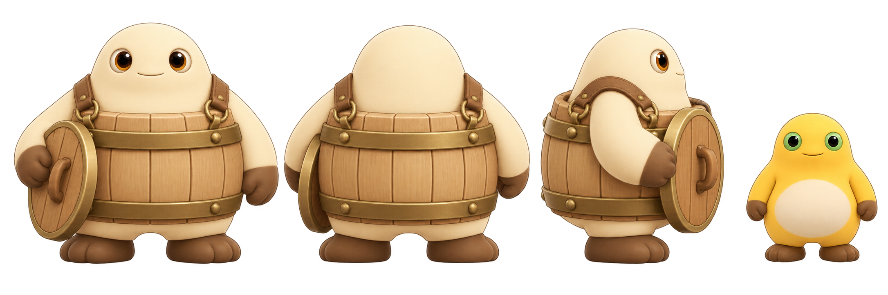
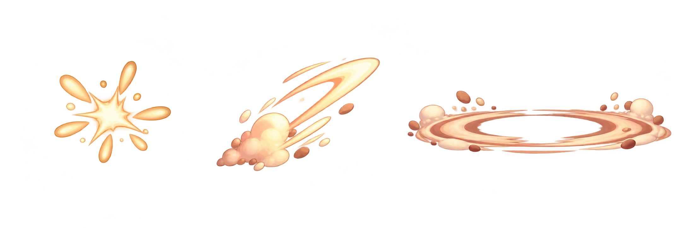

方案 A · 桶盖持在身前

frontbackside_right
木桶身体的材质与颜色能区别奶盾，但正面桶盖可能接近举盾读法。

frontbackside_right
木桶身体的材质与颜色能区别奶盾，但正面桶盖可能接近举盾读法。

frontbackside_right
桶盖垂在身侧，静止剪影更像桶具携行；攻击时再举起桶盖。

从左到右、先上排再下排：待机、冲锋预警、冲锋出击、桶盖举起预警、桶盖砸地。需要后续补上正/背/侧向逐帧与工程时间对拍。
单姿势方向稿；1.35 秒保护窗的实际动画帧和特效时长需按工程事件接线。

从左至右：J 近战接触爆点、冲撞接触反馈、桶盖砸地环波。Miss 不播放命中爆点；砸地波纹本身不代表玩家受伤。
从左至右、先上排再下排：奶球、近战挥击弧、冲撞拖尾、大笑范围波、主角受击、防御护层。除受击/命中已有明确事件外，能力触发接口待工程确认。
| 事项 | 当前提案 | 工程边界 |
|---|---|---|
| Boss 源帧 | 512×512；正/背/右侧，统一脚底锚；初始锚点建议 (256,466) | 三向/锚点在实际机位复核后冻结；源画布不按 0.82 预缩放 |
| 冲锋预警 | 对拍 0.90 秒 | 不提前播放命中 VFX |
| 桶盖砸地预警 | 对拍 1.05 秒 | 命中/落空都可表现砸地；不改变伤害判定 |
| 二阶段 | 对拍 1.35 秒 | VFX 不闪屏，不盖住血条、预警文字和角色 |
| 角色显示 | 美术比例按源图交付 | 工程统一显示缩放为 0.82，不做二次预缩小 |
第一批只确认风格。完整 Boss 三向九状态动画、主角与战斗 VFX 序列、透明边缘/锚点/固定机位 QA 暂估 10–16 美术人天（按 1 人天=6 小时）。该新增范围不含在原 α 美术预算内，具体帧数和 Presenter 事件冻结后再确认。
完整映射、SHA-256 和逐项状态见 manifest；要求见 Boss/VFX 交接要求；执行记录见 首批交付记录。